A Long Tradition
Sourdough has ancient roots and was used long before modern commercial yeast. Its slow, natural process is one reason it still feels so timeless and satisfying today.
Sourdough can feel complicated at first, but it becomes much easier when you understand how starter, dough strength, fermentation, and temperature all work together. This guide page is here to help you build those fundamentals one step at a time.
Why Sourdough
Sourdough is traditional bread made through natural fermentation using wild yeast and beneficial bacteria rather than relying only on commercial yeast. That slower process helps develop flavor, structure, and the character that makes sourdough so special.
Sourdough has ancient roots and was used long before modern commercial yeast. Its slow, natural process is one reason it still feels so timeless and satisfying today.

At its core, sourdough is made with flour, water, and salt. Time, fermentation, and technique do much of the heavy lifting.

Many people appreciate sourdough for its deep flavor, traditional process, and long fermentation. Some individuals find long-fermented sourdough easier to tolerate than conventional bread, though traditional wheat sourdough is not gluten-free.
Getting Started
You do not need a commercial bakery setup to make great sourdough at home. Start simple, stay consistent, and learn how your dough behaves in your own kitchen.

Sourdough is much easier to repeat when ingredients are weighed in grams instead of measured by volume. A scale gives you more control over hydration, feeding ratios, and consistent recipe results.
Starter Basics
A sourdough starter is a living culture of flour and water filled with wild yeast and beneficial bacteria. Once it becomes active and well-fed, it is what helps naturally leaven your dough.

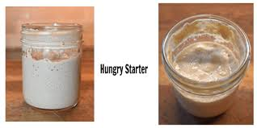

If your starter lives at room temperature, it usually needs more frequent feeding. If it lives in the refrigerator, it can be maintained on a more relaxed schedule and refreshed before baking. A strong routine matters more than an overly complicated one.
A hungry starter often flattens after peaking, loses some structure, and may develop a sharper smell. That does not necessarily mean it is ruined. It often just needs a good feeding schedule and a little time to bounce back.
Start Here
You can create a starter from scratch, get one from another baker, or begin with one of our prepared starter options.
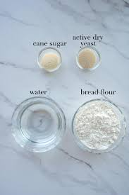
This is a slower process, but it teaches you how starter behaves from the beginning. Expect several days of feeding before it becomes reliable enough to bake with.
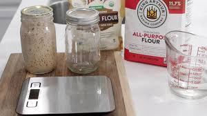
A refrigerated, wet, active starter gives you a head start. Once refreshed and fed, it can quickly become ready for regular baking.
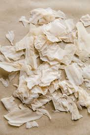
Dehydrated starter is shelf-stable and a great option for shipping, storing, gifting, or keeping as a backup. It must be rehydrated and strengthened before baking.
Reign & Wilder offers both live starter and dehydrated starter for home bakers who want a reliable place to begin.
Shop StarterFrom Scratch
Creating a starter is mostly a process of regular feeding and patience. The exact timeline can vary based on flour, temperature, and feeding consistency, but the basic principles stay the same.
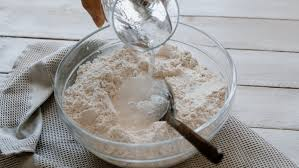
1Mix flour and water in a clean jar until fully combined. Many bakers prefer grams because they keep the process more accurate and repeatable.
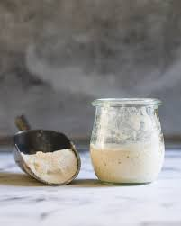
2Discard a portion and feed fresh flour and water on a regular schedule. Consistency matters more than perfection in the early days.
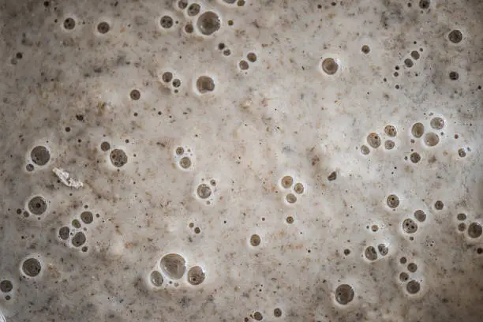
3Bubbles, growth, aroma, and predictable rising after feeding are signs the culture is developing strength.
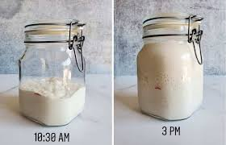
4A starter should rise reliably after feeding before being used in dough. A little patience here makes a big difference later.
Dehydrated Starter
Dehydrating starter preserves the culture in a dormant state. Rehydrating brings that culture back to life gradually through water, flour, and repeated feedings.
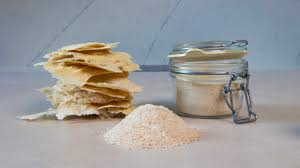
Dehydrated starter does not usually come back at full strength instantly. It often needs a few feedings before it becomes vigorous, bubbly, and reliable enough for dough.
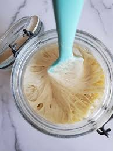
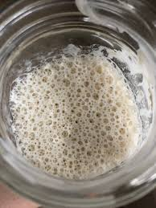
Maintenance
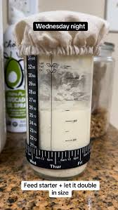
Best for frequent bakers. Starter usually needs more regular feeding, but it stays active and ready to build with.
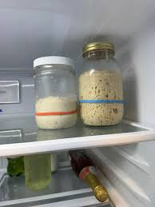
Great for a lower-maintenance routine. Refrigeration slows activity so the starter can rest between bakes.
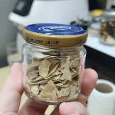
Dehydrated starter is useful as a backup, gift, or long-term storage option in case your main starter becomes weak or neglected.
Dough Fundamentals
Understanding how hydration and gluten development affect dough will help you handle it better and choose the right style for what you want to make.
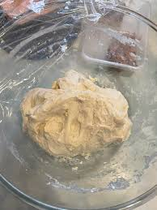
Usually easier to handle, firmer, and helpful for tighter-crumb breads, sandwich loaves, and bagel-style doughs.
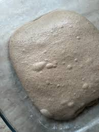
A versatile middle ground that works well for many artisan loaves and everyday sourdough bakes.
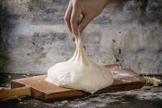
Softer, stickier, and often better for open crumb loaves, focaccia, and doughs that benefit from more extensibility.

Gluten development is what gives dough strength, elasticity, and structure. In sourdough, that structure builds through mixing, resting, fermentation, and folding. A stronger dough can trap gas better and hold its shape more effectively.
Long fermentation affects flavor, texture, and digestibility. It also changes how the dough behaves over time, which is why sourdough often rewards patience.
Handling Methods
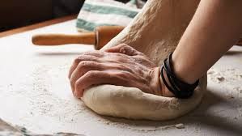
Useful for some doughs, but many sourdough bakers rely more on time, hydration, and gentle strengthening methods.
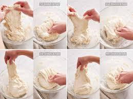
A common method for building structure gradually during bulk fermentation without aggressively working the dough.
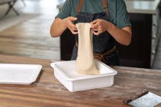
A gentle method especially helpful with wetter doughs. It strengthens dough while preserving air and structure.
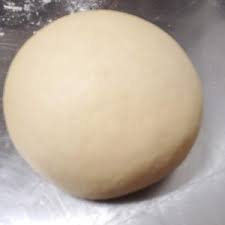
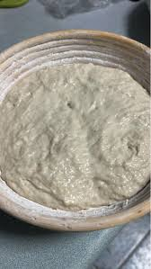
If dough becomes overly tight, tears easily, resists shaping, or loses the balance between strength and extensibility, it may need more rest and less handling. Sourdough often improves when you let time do part of the work.
Fermentation
Fermentation is where much of the magic happens. Learning what dough looks and feels like at each stage is often more useful than relying on a single exact time.
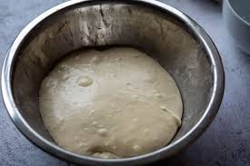
Dough may look dense and less active early on, but it should gradually become smoother, puffier, and more alive as fermentation progresses.
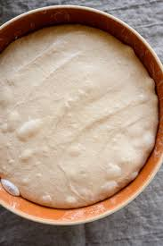
Properly fermented dough often looks lighter, fuller, slightly domed, and shows better aeration and structure.
Overproofed dough can look weak, overly loose, fragile, or deflated, and may struggle to hold shape.
Baking Basics
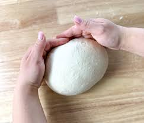
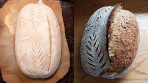

Steam helps keep the outer surface of the dough flexible early in the bake. That gives the loaf more room to expand before the crust sets, which can improve oven spring and crust quality.
A good crust is usually deeply colored, well set, and evenly baked without being raw inside or overly scorched outside.
Troubleshooting
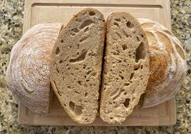
Often related to weak starter, underfermentation, or dough that lacked enough strength.
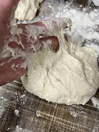
Could be hydration, handling, flour type, or fermentation stage rather than a sign something is wrong.
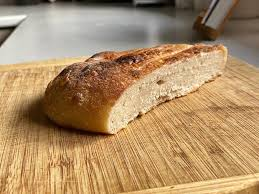
Often points to overproofing, shaping issues, or dough that never built enough strength.
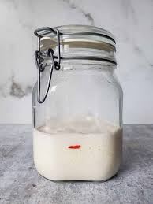
Usually needs more regular feeding, warmth, or time to regain strength.
Storage
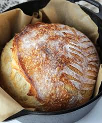
Cutting too soon can affect the crumb and texture inside the loaf. Letting bread cool fully usually gives a better result.
FAQ
It may have needed a stronger starter, more fermentation time, warmer dough conditions, or better gluten development.
Sticky dough can be normal depending on hydration, flour choice, and fermentation stage. It does not always mean something went wrong.
Grams are more consistent and make it easier to repeat good results and understand hydration more accurately.
Usually when it rises reliably after feeding, looks airy and bubbly, and behaves predictably enough to leaven dough.
In-Person Learning
Tempesst also offers in-person sourdough classes for beginners and home bakers who want hands-on help, real guidance, and a more personal learning experience.
Once you understand the basics, the best way to grow is by baking more often, trying new recipes, and using the right tools to make the process smoother.